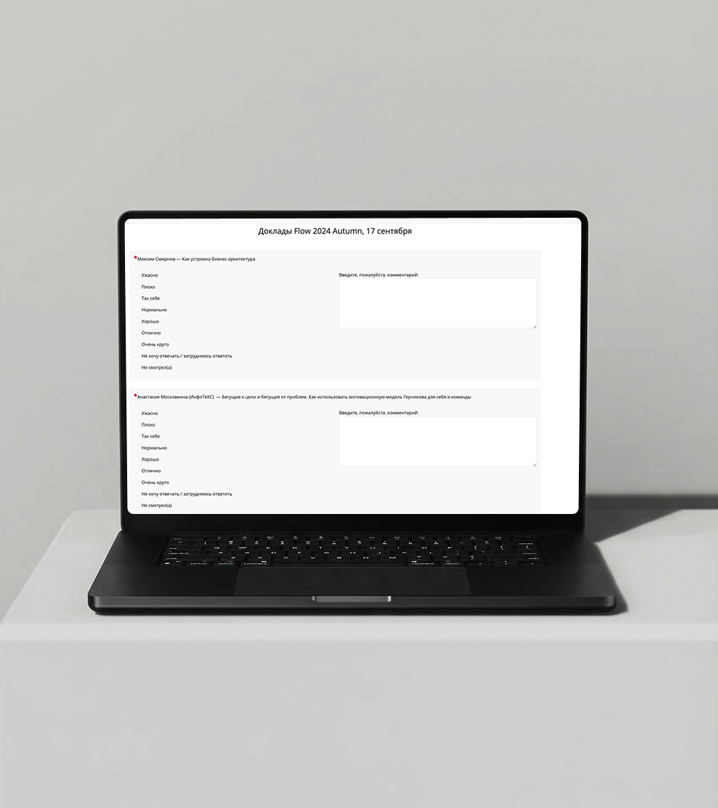
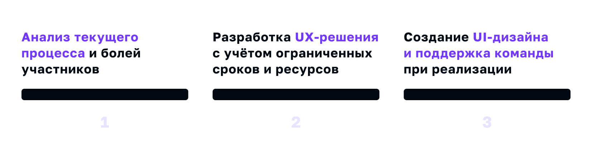
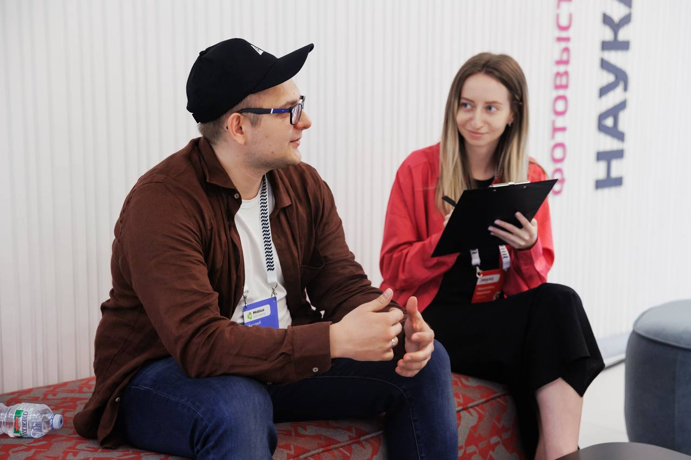
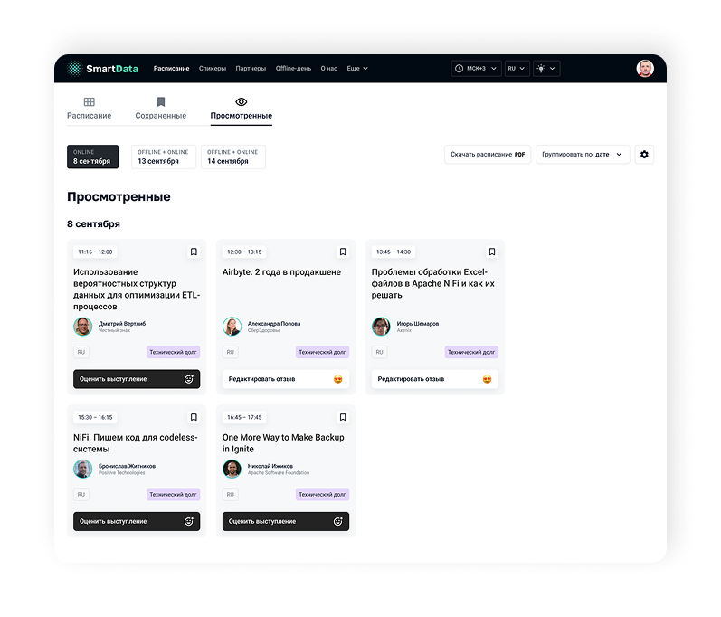
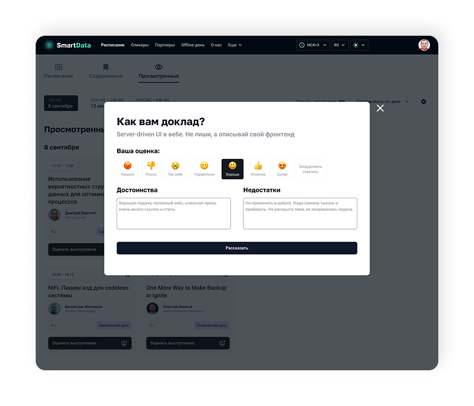

Контекст
Качество докладов — один из ключевых факторов NPS конференции. Без достоверной обратной связи от участников программный комитет не может принимать обоснованные решения о спикерах и темах. Компания, организующая конференции, собирает обратную связь о докладах, чтобы улучшать программу и работу со спикерами.
Старая форма оценки была слишком длинной и стандартизированной, не отражала реальный опыт участников. Участники теряли время на поиск своих докладов, а данные теряли точность.
Моя роль
Product Designer
- провела исследование: интервью с участниками и анализ прошлых опросов — выяснила, где процесс ломается;
- нашла решение в рамках существующей архитектуры, чтобы разработчики собрали его за 3 дня;
- встроила оценку в уже существующий сценарий просмотра докладов — без новых точек входа.

Проблема
После конференции команда получала мало отзывов (конверсия всего 12%): старая форма была большой, стандартизированной, не связанной с экосистемой личного кабинета и не отражала реальный опыт участников.
Участникам приходилось вручную искать доклады, на которых они были, что создавало высокий порог входа.
Из-за утомительного процесса часть спикеров не получала обратной связи вовсе, а данные теряли точность.
Цель
Повысить количество отзывов, сохранив ценность данных и минимизировав нагрузку на разработку.
Дополнительное ограничение: до начала сезона конференций оставались недели, команда разработки была загружена — решение должно было вписаться в существующую архитектуру.
Процесс работы

- Провела интервью с участниками и разобрала результаты прошлых опросов.
- Главный барьер: форма не соответствовала личному опыту — участникам приходилось вручную искать свои доклады в длинном общем списке.
- Вывод: люди готовы оставлять отзывы, если процесс занимает меньше минуты и не требует усилий.

Формирование решения
Вместо отдельной формы — встроили оценку прямо в расписание: участник видит только свои доклады и оценивает их в один клик.
- Добавлен подраздел «Просмотренные доклады», показывающий только доклады, на которых был участник.
- Минимум кликов: расписание → просмотренные доклады → оценка.
Возможности
Дизайн и прототипирование


- Эмодзи и короткие подписи упрощают мобильный сценарий.
- Пользователь видит только свои доклады и может при желании изменить отзыв.
- Решение реализовано в рамках текущей дизайн-системы без новых кастомных элементов.
Результаты
+34% участников завершили оценку (feedback submissions)
Среднее время заполнения сократилось с ~12 до 3–4 минут
Пользователи уже отмечали удобство и охотнее делились отзывами
Решение потребовало минимальных усилий от разработчиков